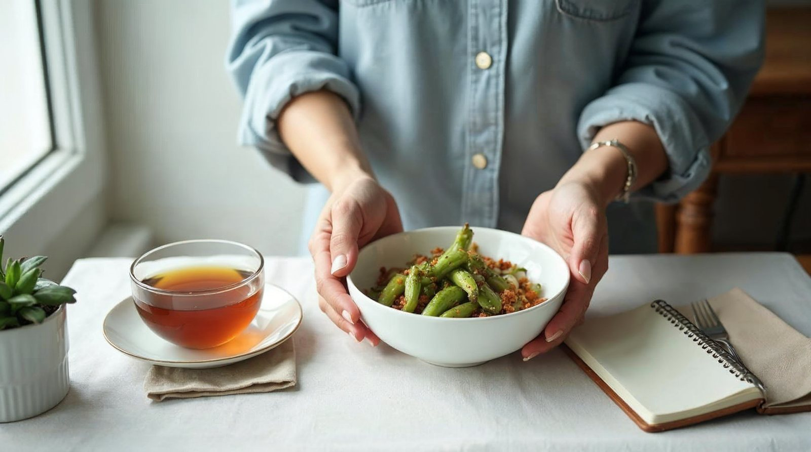
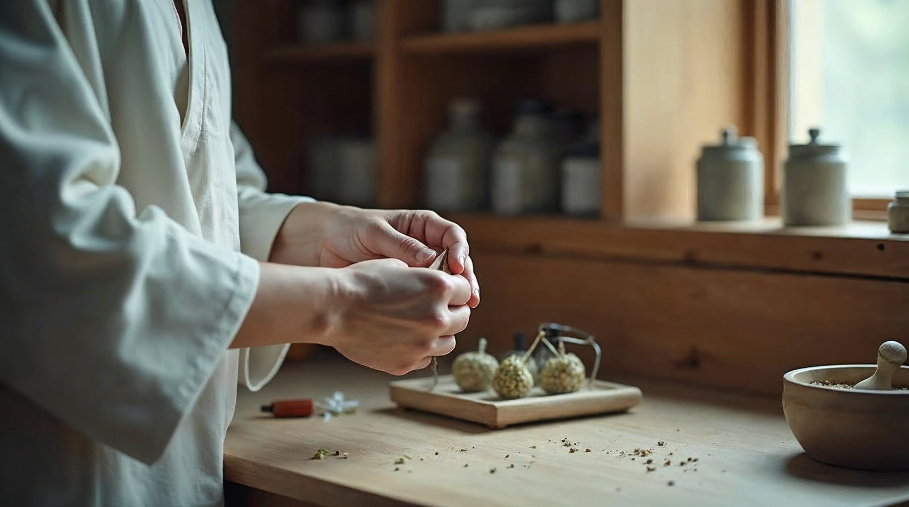
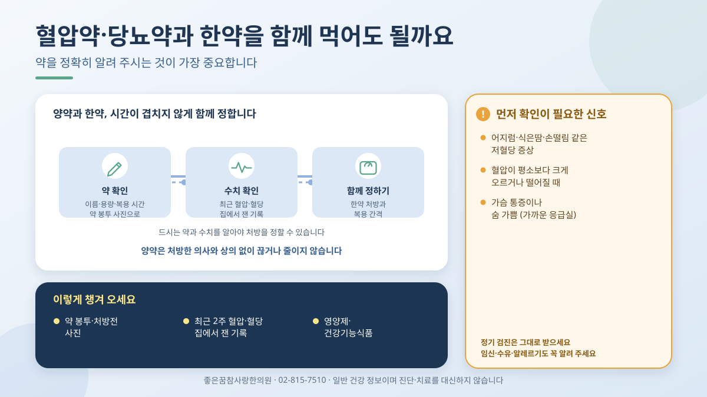

이종호 한의사 감수좋은꿈참사랑한의원 대표원장 (한의사 면허번호 19769)발행 2026-11-23 · 수정 2026-11-25
이 글의 차례
혈압약이나 당뇨약을 드시는 분이 한약을 함께 드셔도 되는지는, 드시는 약의 이름과 용량, 복용 시간, 최근 혈압·혈당 수치를 알려 주셔야 확인할 수 있습니다. 이 정보를 고려해 처방과 복용 간격을 정하며, 양약은 처방한 의사와 상의 없이 끊거나 줄이지 않습니다.
오래 약을 드시는 분들이 '같이 먹어도 괜찮을까' 걱정하며 상담을 오시는데, 가장 중요한 것은 약을 정확히 알려 주시는 것입니다. 한약 상담 때는 약 봉투나 처방전, 약국에서 받은 복약 안내문처럼 복용 약 목록을 꼭 보여 주세요. 한약을 시작했다고 혈압약이나 당뇨약을 임의로 끊지 않으며, 약 조절은 처방한 주치의와 상의합니다.
왜 이런 불편이 생길 수 있나요
- 일부 약재와 양약은 함께 드실 때 서로의 작용에 영향을 줄 수 있다고 알려져 있어, 드시는 약을 알아야 처방을 정할 수 있습니다.
- 혈압약과 당뇨약은 매일 같은 시간에 드시는 것이 중요해, 한약을 드시는 시간과 겹치지 않게 정해야 합니다.
- 식사량이나 생활이 바뀌면 혈당과 혈압도 달라질 수 있어 복용 중에도 수치를 함께 살핍니다.
- 영양제나 건강기능식품도 함께 고려해야 할 때가 있습니다.
- 혈압약·당뇨약과 함께 고지혈증약, 혈액을 묽게 하는 약, 갑상선약처럼 여러 약을 드시는 경우가 많아 한두 가지가 아니라 전체 목록을 보아야 합니다.
- 약 이름이 같아도 용량이 바뀌거나 새 약이 더해지면 복용 간격을 다시 확인해야 합니다.
먼저 이렇게 여쭙니다
- 드시는 약의 이름과 용량, 복용 시간을 알고 계신가요?
- 최근 혈압이나 혈당 수치는 어떤가요?
- 영양제나 건강기능식품도 드시나요?
- 약을 처방하는 병원은 어디인가요?
- 저혈당 증상을 겪은 적이 있나요?
- 최근 몇 달 사이 약이 바뀌거나 용량이 달라진 적이 있나요?
일상에서 먼저 해 볼 수 있는 것
- 약 봉투나 처방전 사진을 찍어 오기
- 약국에서 받은 복약 안내문을 버리지 말고 모아 두기
- 혈압·혈당 수치를 집에서 기록해 두기(혈압은 아침 일어나 화장실 다녀온 뒤, 저녁 잠들기 전처럼 매번 같은 때에 재기)
- 양약은 처방한 의사와 상의 없이 끊거나 줄이지 않기
- 한약을 드시는 중에도 다니시는 병원의 정기 진료와 검진 받기
- 주치의에게도 한약 상담을 받고 있다고 알리기

상황별 예시
- 예를 들어 아침마다 혈압약을 드시는 직장인이 피로와 소화 불편으로 상담을 오신 경우, 약 봉투 사진과 2주 동안 집에서 잰 혈압 기록을 함께 보고 한약이 필요한지부터 판단합니다. 한약을 드시게 되면 혈압약은 지금처럼 같은 시간에 드시고, 한약 시간은 겹치지 않게 따로 정합니다.
- 예를 들어 당뇨약을 드시는 어르신을 자녀가 모시고 오는 경우, 드시는 약을 모두 담은 봉투나 약국 처방 내역을 함께 가져오시면 빠진 약 없이 확인할 수 있습니다. 식사량이 들쭉날쭉하거나 저혈당을 겪은 적이 있다면 그 이야기도 꼭 들려 주세요.
- 예를 들어 최근 내과에서 혈압약이 바뀐 분이라면, 한약을 드시는 중이더라도 바뀐 약 이름과 시작한 날을 알려 주세요. 약이 바뀐 뒤 어지럼이나 피로가 생겼다면 먼저 처방한 내과에 알리고, 한의원에도 함께 알려 주시면 복용 간격을 다시 살핍니다.
자주 하는 오해
- 한약을 먹기 시작하면 양약을 줄여도 된다고 여기는 분이 있지만, 양약 조절은 처방한 주치의와 상의할 일이고 한의원에서 임의로 정하지 않습니다.
- 약재는 자연에서 온 것이라 양약과 상관없다고 생각하기 쉽지만, 약재도 약이어서 함께 드시는 약을 알아야 처방을 정할 수 있습니다.
- 영양제나 즙, 차는 약이 아니니 말하지 않아도 된다고 여기기 쉽지만, 매일 드시는 것은 모두 알려 주셔야 겹치는 것을 확인할 수 있습니다.
스스로 점검해 보세요
- 드시는 약의 이름과 용량, 복용 시간을 말할 수 있다
- 약 봉투나 처방전, 복약 안내문을 사진으로 가지고 있다
- 최근 2주 집에서 잰 혈압이나 혈당 기록이 있다
- 최근 석 달 안에 약이 바뀌거나 더해진 적이 있는지 알고 있다
- 드시는 영양제와 건강기능식품을 적어 두었다
- 저혈당 증상이 생기면 어떻게 할지 주치의에게 들은 적이 있다
- 한약을 먹는다고 양약을 줄이지 않는다는 것을 알고 있다

한의원에서 함께 살필 수 있는 경우
- 여러 약을 함께 드시는 경우 복용 중인 약을 확인하고 한약 처방과 복용 간격을 함께 정합니다.
- 혈압·혈당 관리 중 피로나 소화 불편이 있는 경우 생활과 몸의 상태를 함께 살핍니다.
- 한약 복용 중 몸의 변화가 있는 경우 경과를 함께 살핍니다.
좋은꿈참사랑한의원에서는 먼저 드시는 약과 최근 수치, 불편한 점을 충분히 듣고, 진맥과 복진 등으로 몸 상태를 살핀 뒤 한약이 필요한지부터 판단합니다. 필요하다고 판단될 때 약 정보를 고려해 처방과 복용 시간을 정하고, 원내에서 달여 대표원장이 약재를 검수합니다.
필요하면 당화혈색소처럼 원내에서 확인할 수 있는 항목을 살피기도 하며, 약 조절이 필요한 경우는 처방한 의료기관과 상의하시도록 안내합니다.
한약을 드시는 동안 다시 오시면 지난번 이야기를 이어서, 집에서 잰 혈압·혈당 기록과 그사이 바뀐 약이 없는지부터 여쭙습니다. 맥을 다시 짚고 필요하면 혀와 배를 살펴 처방을 이어 갈지 조정할지 함께 정합니다. 원내에서 확인할 수 있는 검사 항목과 공복이 필요한지는 방문 전 전화로 확인해 주세요.
얼마나 지켜보고 언제 상담할까요
- 한약 상담 전 1~2주 동안 집에서 잰 혈압·혈당을 같은 시간대에 적어 오시면 지금의 흐름을 함께 보기 좋습니다.
- 한약을 시작한 뒤에도 평소처럼 수치를 재고, 평소보다 뚜렷하게 높거나 낮은 날이 이틀 넘게 이어지면 다음 진료를 기다리지 말고 주치의와 한의원에 함께 알려 주세요.
- 약이 바뀌거나 새 약이 더해지면 그날 전화로 알려 주세요. 한약 복용 간격을 다시 확인합니다.
- 식은땀, 손떨림, 어지럼 같은 저혈당 증상이 생기면 주치의에게 안내받은 대로 먼저 대처하고, 반복되면 주치의 진료를 받으세요.
- 가슴 통증, 숨참, 갑자기 말이 어눌해지거나 한쪽 팔다리에 힘이 빠지면 지켜보지 말고 가까운 응급실로 가세요.
이렇게 기록해 오시면 상담이 쉬워집니다
- 복용 중인 약 이름, 용량, 복용 시간(약 봉투 사진)
- 최근 2주 집에서 잰 혈압·혈당 기록
- 최근 건강검진이나 병원 검사 결과지
- 드시는 영양제와 건강기능식품
이런 증상은 먼저 확인이 필요합니다
- 어지럼, 식은땀, 손떨림 같은 저혈당 증상이 있는 경우
- 혈압이 평소보다 크게 오르거나 떨어진 경우
- 가슴 통증이나 숨 가쁨이 있는 경우
- 갑자기 말이 어눌해지거나 한쪽 팔다리에 힘이 빠지는 경우
- 한약 복용 뒤 두드러기나 얼굴 붓기가 생긴 경우
가슴 통증이나 숨 가쁨이 있으면 응급실로 바로 확인하셔야 합니다. 복용 중인 양약과 영양제, 임신·수유 여부, 알레르기는 진료 전에 꼭 알려 주세요. 복용 중인 양약은 처방한 의사와 상의 없이 줄이거나 끊지 않습니다.
관련 글
- 한의원 가기 전에 복용 약 목록은 어떻게 정리하면 좋나요?
- 한약을 먹는 동안 양약과 음식은 어떻게 알려 주면 되나요?
- 한의원과 병원을 함께 다닐 때는 서로 무엇을 알려야 하나요?

여쭙는 것
- 드시는 약의 이름과 용량, 복용 시간을 알고 계신가요?
- 최근 혈압이나 혈당 수치는 어떤가요?
- 영양제나 건강기능식품도 드시나요?
생활에서 해 볼 것
- 약 봉투나 처방전 사진을 찍어 오기
- 약국에서 받은 복약 안내문을 버리지 말고 모아 두기
- 혈압·혈당 수치를 집에서 기록해 두기(혈압은 아침 일어나 화장실 다녀온 뒤, 저녁…
한의원에서 함께 살필 것
- 여러 약을 함께 드시는 경우 복용 중인 약을 확인하고 한약 처방과 복용 간격을 함께…
- 혈압·혈당 관리 중 피로나 소화 불편이 있는 경우 생활과 몸의 상태를 함께 살핍니다.
- 한약 복용 중 몸의 변화가 있는 경우 경과를 함께 살핍니다.
먼저 확인이 필요한 신호
- 어지럼, 식은땀, 손떨림 같은 저혈당 증상이 있는 경우
- 혈압이 평소보다 크게 오르거나 떨어진 경우
- 가슴 통증이나 숨 가쁨이 있는 경우
한눈에 보는 표
| 구분 | 핵심 |
|---|---|
| 여쭙는 것 | 드시는 약의 이름과 용량, 복용 시간을 알고 계신가요? 최근 혈압이나 혈당 수치는 어떤가요? |
| 생활에서 해 볼 것 | 약 봉투나 처방전 사진을 찍어 오기 약국에서 받은 복약 안내문을 버리지 말고 모아 두기 |
| 한의원에서 함께 살필 것 | 여러 약을 함께 드시는 경우 복용 중인 약을 확인하고 한약 처방과 복용 간격을 함께 정합니다. 혈압·혈당 관리 중 피로나 소화 불편이 있는 경우 생활과 몸의 상태를 함께 살핍니다. |
| 먼저 확인이 필요한 신호 | 어지럼, 식은땀, 손떨림 같은 저혈당 증상이 있는 경우 혈압이 평소보다 크게 오르거나 떨어진 경우 |
자주 묻는 질문
한약을 먹으면 양약을 줄여도 되나요?
양약 조절은 처방한 의사와 상의하셔야 하며, 임의로 줄이거나 끊지 않습니다.
약 목록이 없으면 어떻게 하나요?
약국이나 병원에서 처방 내역을 받아 오시거나 약 봉투를 가져오시면 됩니다.
한약과 양약은 몇 시간 간격을 두나요?
처방과 드시는 약에 따라 달라 상담 때 함께 정해 드립니다.
진료 시간은 어떻게 되나요?
좋은꿈참사랑한의원은 평일 09:30~20:00(점심 13:00~14:00), 토·일·공휴일 09:30~15:00에 진료합니다.
한약을 먹는 동안 다니는 내과에도 알려야 하나요?
네. 주치의에게도 한약을 드시고 있다고 알려 주시면 두 곳에서 같은 정보를 바탕으로 살필 수 있습니다.
약이 중간에 바뀌면 어떻게 하나요?
바뀐 약 이름과 시작한 날을 전화로 알려 주시면 한약 복용 간격을 다시 확인해 드립니다.
좋은꿈참사랑한의원은 재진 때 지난번 이야기부터 이어서 여쭙니다. 진료시간과 예약은 오시는 길에서 확인하세요.
어디서 상담받을 수 있나요?
좋은꿈참사랑한의원은 서울 동작구 만양로2길 2 신성빌딩 3층·5층(서울 동작구 상도동, 7호선 상도역 3번 출구 근처)에 있습니다. 한의사 3명(이종호 대표원장, 조영기 수석진료원장, 정원영 진료원장)이 진료합니다. 진료시간은 평일 09:30~20:00(점심 13:00~14:00), 토·일·공휴일 09:30~15:00이며, 방문 전 전화로 확인을 권합니다. 예약은 네이버 예약, 카카오톡 상담, 전화 02-815-7510로 받습니다.
이 글은 일반적인 건강 정보이며 개인의 진단이나 치료를 대신하지 않습니다. 증상이 있거나 복용 중인 약이 있다면 진료를 통해 확인하세요. 치료 효과는 개인마다 다를 수 있습니다.
작성 기준: 일반적으로 알려져 있는 건강 정보를 참고해 정리했습니다(대표원장 감수). 증상 기록은 1~2주 동안 하루 1회, 비슷한 시간에 적어 오시면 지난 상태와 비교하기 쉽습니다.